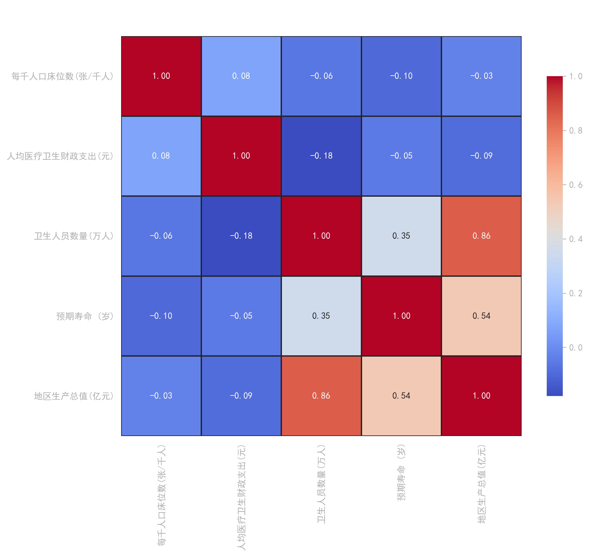

150,000+
多源原始记录
31
省级截面覆盖
25
年度时间跨度
0.00%
黄金期缺失率
核心算法: Regex正则脱水 / FFILL向后结转

| 排名 | 省份 | 综合技术效率(TE) | 规模效率(SE) |
|---|---|---|---|
| TOP 1 | 北京市 | 1.000 (DEA有效) | 1.000 |
| TOP 2 | 上海市 | 1.000 (DEA有效) | 1.000 |
| TOP 3 | 浙江省 | 0.985 (高优转化) | 0.992 |
| ... 省略中间梯队 ... | |||
| BTM 3 | 青海省 | 0.684 (配置冗余) | 0.712 |
| BTM 2 | 甘肃省 | 0.652 (配置冗余) | 0.690 |
| BTM 1 | 西藏自治区 | 0.543 (极度洼地) | 0.588 |


🎯 靶向治理：打破纯技术低效
多数省份规模效率已近极值(均值>0.9)，必须从“扩规模”转向“调结构”，遏制盲目扩张。
🤝 跨域协同：高能级溢出
建议以“高优区”为核心建立跨省专科医联体，向“低效洼地”进行技术与管理双重赋能。